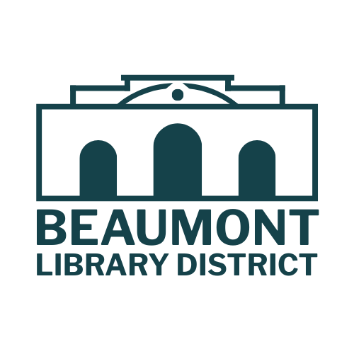
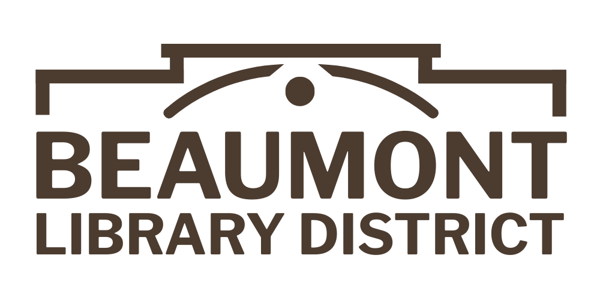
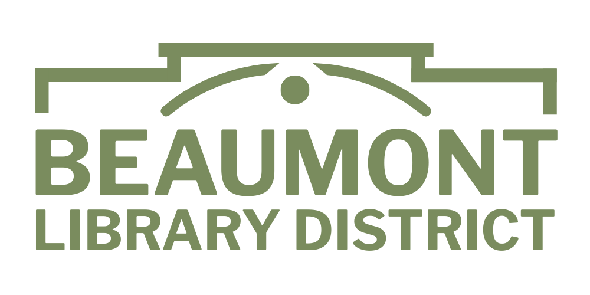
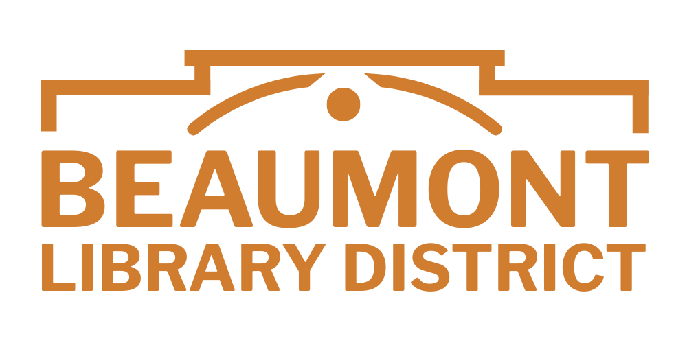
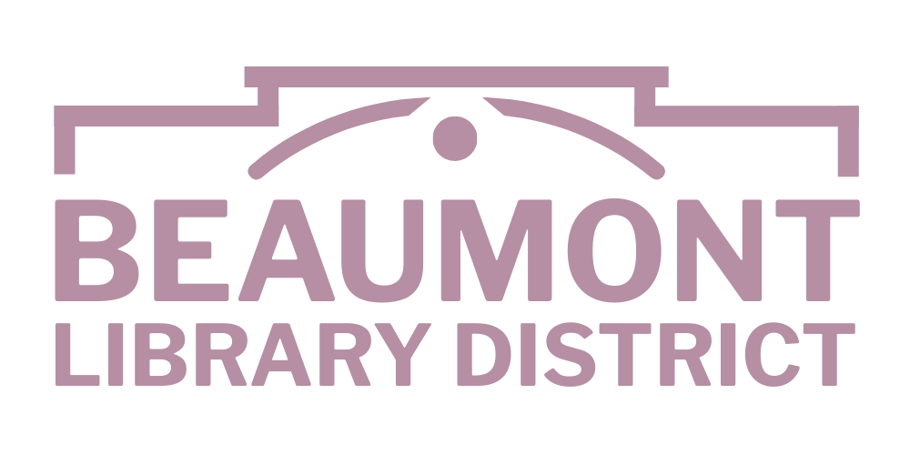

{kind=link}
{kind=link}
{kind=link}
{kind=link}
{kind=link}
{kind=link}
{kind=link}
{kind=link}
{kind=link}
{kind=link}
{kind=link}
{kind=link}
{kind=link}
{kind=link}
{kind=link}
{kind=link}
{kind=link}
{kind=link}
{kind=link}
{kind=link}
San Gorgonio Blue
#15424A
- Hex
- RGB
- CMYK
- Pantone
- Role
- Primary brand color · ink for headlines, body, the wordmark
- Story
- The evening silhouette of Mount San Gorgonio viewed from the library grounds — dependable depth and calm.
A brand standards manual · First edition
Visual identity standards for a civic library founded 1914, serving Beaumont, Cherry Valley, and the inland communities of the San Gorgonio Pass.
Chapter One
The Beaumont Library District is the oldest continuously operating institution in our valley — opened informally in 1911, chartered 1912, and built into its first Carnegie home in 1914. This manual sets the standards by which that legacy is shown to the world.
To honor the library's legacy while reimagining its identity as a dynamic, welcoming, and modern resource hub for a rapidly growing and diverse community.
To unify the visual language of the library through thoughtful rebranding, enhance visitor experience via intuitive wayfinding, and celebrate cultural relevance through public art.
Motifs of tree rings, arches, and stacked books with roots symbolize continuity from 1914 to the present.
Built for a rapidly expanding, diverse population. Avoids the quaint and the overly nostalgic.
A tiered tone and type system serves every age without ever talking down.
The identity is integrated with the physical space — wayfinding, murals, color transitions, ceremonial quotes.
Chapter Two
The wordmark is a single illustrated drawing: every letter of "Beaumont Library District" is hand-traced with motifs from the San Gorgonio Pass — peaks, oak canopies, citrus groves, a passing train. It is the only sanctioned mark of the District.
Primary · Horizontal
San Gorgonio Blue on Desert Sand
Use this lockup wherever width allows — letterhead, web headers, exterior signage, vehicle livery, the catalog.

Primary · Vertical
For tight or square spaces
Use for social-media profile images, square ads, badges, and any application where the horizontal lockup is too wide to read clearly.
The logo is provided in every base-palette color plus pure black and pure white. Choose the variant that produces the highest contrast against its background — never recolor a logo file by hand.





Maintain breathing room around the logo equal to the height of the capital B in "Beaumont." Other graphics, text, edges, and folds must stay outside that boundary.
The horizontal lockup must never be reproduced below 1 in / 25 mm / 144 px wide. The vertical lockup must never appear below 0.75 in / 19 mm / 108 px wide. Below these thresholds, the illustrated wordmark loses fidelity.
Eight things that turn a strong mark into a weak one. None of these are acceptable.
Chapter Three
Inspired by the sunlit valleys, wildflower trails, and storied past of Beaumont, this seven-color palette captures the soul of the land in every shade. Each hue tells a story — of seasons, soil, and sky — and each was selected to perform across digital screens, painted walls, and printed sheets.
Click any value to copy it to the clipboard.
Six supporting tints and shades, derived from the base palette, are approved for use where the base seven need a darker, lighter, or softer companion — particularly in accessibility-sensitive interfaces and printed long-form documents.
Deep-ink body text where Canyon Earth feels too warm.
Accessible variant of Poppy on light backgrounds.
Accessible variant of Lavender on light backgrounds.
Almost-white for long-form print pieces and dialogues.
Pale poppy for soft backgrounds and zones.
Pale lavender for childrens-area and program callouts.
Every combination shown below meets or exceeds WCAG 2.1 AA contrast for normal-weight text (4.5:1) or large-weight headings (3:1). Prefer these for any text-critical surface — interfaces, signage, body copy.
Combinations not shown here are not necessarily forbidden, but they have not been pre-validated. Test any new pairing at WebAIM Contrast Checker before publishing.
Chapter Four
Three type families carry the brand. A high-contrast display serif handles ceremonial moments. A workhorse American grotesque rooted in 1902 newspaper headlines does the everyday heavy lifting. A narrower newsroom companion from 1908 covers the compact corners — disclaimers, fine print, dense tables. Together they say scholarly without saying stuffy.
Display
A free, open-licensed display serif with high-contrast strokes and flared, engraved-feeling terminals. Released under the SIL Open Font License. Chosen for its weight, character, and quiet civic gravity at ceremonial sizes.
ABCDEFGHIJKLMNOPQRSTUVWXYZ
abcdefghijklmnopqrstuvwxyz
0123456789 & , . ! ?
Use for: the wordmark, hero headlines, chapter titles, ceremonial signage, and any moment of weight at ≥ 24 pt / 32 px. Below that threshold its high-contrast strokes thin to invisibility — use Libre Franklin instead.
Editorial Serif (optional)
The text-weight companion to Display — slightly less dramatic, with serifs adapted for paragraph use. Use for editorial pull-quotes, large lead paragraphs, and printed long-form pieces where the brand wants to feel like a printed book.
Use for: pull-quotes, lead-in paragraphs at 18–24 pt, ceremonial captions. Do not use for running body copy.
Sans · the workhorse
A free, variable-weight revival of Franklin Gothic (Morris Fuller Benton, 1902) — the typeface that taught American newspapers how to set a clear headline. Nine weights from Thin to Black; carries the entire interface, signage, and body system.
The quick brown fox jumped over the lazy dog.
The quick brown fox jumped over the lazy dog.
The quick brown fox jumped over the lazy dog.
The quick brown fox jumped over the lazy dog.
The quick brown fox jumped over the lazy dog.
Use for: everything else. H1–H6 web headings, sub-titles, body copy, captions, UI labels, buttons, wayfinding signage, posters, business cards, and any place a sans-serif voice is wanted.
Compact · for tight space only
A free revival of News Gothic (Morris Fuller Benton, 1908) — Franklin Gothic's narrower newsroom sibling, designed to set classified columns and small-cap legal copy without losing legibility. Released under the SIL Open Font License.
The quick brown fox jumped over the lazy dog.
The quick brown fox jumped over the lazy dog.
By signing below, the patron acknowledges receipt of the District's privacy policy and consents to the terms of borrowing under the rules adopted by the Board of Trustees. This notice constitutes the entirety of the agreement and supersedes prior representations.
Use for: legal disclaimers, fine print, dense data tables, footer compliance lines, and tight captions where Libre Franklin would either feel too wide or push to the next column. Do not use for body copy — that's Libre Franklin 400's job.
A starting point — not a cage. Adjust sizes for context, but keep the role assignments consistent.
| Role | Family | Weight | Size · Web | Size · Print |
|---|---|---|---|---|
| Hero / cover | DM Serif Display | Regular | 72–120 px | 54–90 pt |
| Chapter title | DM Serif Display | Regular | 48–64 px | 36–48 pt |
| H1 — page | Libre Franklin | 900 | 40–48 px | 30–36 pt |
| H2 — section | Libre Franklin | 800 | 28–32 px | 22–26 pt |
| H3 — subsection | Libre Franklin | 700 | 20–22 px | 16–18 pt |
| Lead / pull-quote | DM Serif Text | Regular | 22–28 px | 18–22 pt |
| Body | Libre Franklin | 400 | 16–18 px | 10–11 pt |
| Caption · UI label | Libre Franklin | 500 | 12–14 px | 8–9 pt |
| Eyebrow · all-caps | Libre Franklin | 700 | 11–13 px, tracking +0.1em | 7–9 pt, tracking +0.1em |
Departure from the May 2025 brief: The original brief named News Cycle as the body font. This edition consolidates to two families — DM Serif and Libre Franklin — because (a) Libre Franklin's nine weights provide all the hierarchy long-form text needs, and (b) two families are easier for non-designers to use correctly than three. News Cycle is no longer part of the system.
Chapter Five
The Beaumont Library District speaks like the place it serves: plainly, warmly, and with the unhurried confidence of an institution that has been doing this since 1914.
Don't write"Patrons are advised that operating hours have been modified."
Do write"Our hours have changed. Here's what's new."
Don't write"Engage with our diverse programmatic offerings."
Do write"Come for story time. Stay for the coffee. Bring your kids."
Don't write"The District is committed to fostering literacy outcomes."
Do write"We help people read — and read more."
Chapter Six
Photography for the District should feel like the District: warm light, real people, local places. No stock-photo handshakes. No corporate beige.
Patrons reading, staff working, programs in motion, the building itself in golden-hour light. Natural light wherever possible. Faces in focus, hands and books in supporting roles. No staged smiles at the camera.
Look for: books in use, not on display · readers absorbed, not posing · the Beaumont landscape as background · seasonal moments (cherry blossom, citrus harvest, lavender bloom)
The District holds an archive of historical photographs of Beaumont. These are gold. Use them — credited — for anniversary pieces, donor materials, programs that celebrate place, and the Timeline Mural.
Treatment: reproduce at original tone where possible. When a duotone is required, use San Gorgonio Blue #15424A for shadows and Desert Sand #EFE0C9 for highlights.
The wordmark itself is illustrated. When additional illustration is needed (children's-area signage, program flyers, the cherry-tree mural), commission work in a related style — hand-drawn linework, warm palette, recognizably local. Do not use clip art, vector mascots, or "library cartoon" imagery.
Chapter Seven
How the system shows up in the wild. The examples below are illustrative — every actual production piece should still be reviewed by the brand manager (see Chapter Nine).
March 24, 2026
Dear Friend of the Library,
We are writing to invite you to the dedication of the renovated Beaumont Library District building, scheduled for the afternoon of Saturday, May 18.
The Carnegie cornerstone laid in 1914 will be unveiled alongside the new wing, and the Timeline Mural will be lit for the first time.
With our thanks,
125 E. Eighth St. · Beaumont, CA 92223 · (951) 845-1357 · bld.lib.ca.us

Kelly Van Valkenburg
Director
(951) 845-3222
kelly.vanvalkenburg@mybld.org
125 E. Eighth St., Beaumont CA 92223
02
Children's Room
Story time · Family Place · Picture books
Chapter Eight
A quick-reference card for anyone touching the brand who isn't a trained designer — staff producing a flyer, a board member preparing slides, a volunteer making a sign for next Saturday's program.
Chapter Nine
For the brand manager — a printable pass/fail list to run against any piece of work before it leaves the building. Tick every box, or it goes back.
Chapter Ten
Each color variant is available as a scalable SVG (for vector software, web, and high-quality print) and a transparent PNG (for Word, PowerPoint, and email signatures).
Both type families are free, open-licensed (SIL OFL), and hosted by Google Fonts.
Brand manager · final approvals
Kelly Van Valkenburg
Director, Beaumont Library District
kelly.vanvalkenburg@mybld.org
(951) 845-3222
Designer · system & this manual
Steven Brown
Steven Brown Video & Design
steven@stevenbrown.design
(310) 994-3048